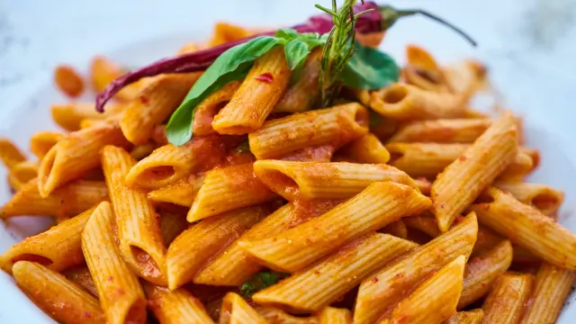

Macaroni

Description:
-
Bring a pot of water to a boil. Cook elbow macaroni until al dente, about 8 minutes.
Boil Macaroni
-
Make a Roux
While the macaroni is cooking, go ahead and start on the roux. A roux is a thickening agent made of one part
fat and one part flour that makes up the base of this creamy mac and cheese.
To make the roux, start by melting butter in a saucepan over medium heat. Add flour, salt, and pepper and
stir until smooth. Slowly pour in milk and stir until the mixture is smooth and bubbling. Be careful to not
let the milk burn.
-
Add Cheese and Macaroni
Finally, the most crucial step: Add cheese! Slowly stir in Cheddar cheese until smooth and melted. We
recommend you grate your own cheese because pre-shredded cheese won't incorporate into the mixture as well
as block cheese. Once the macaroni is finished cooking, drain and stir into cheese sauce until coated.